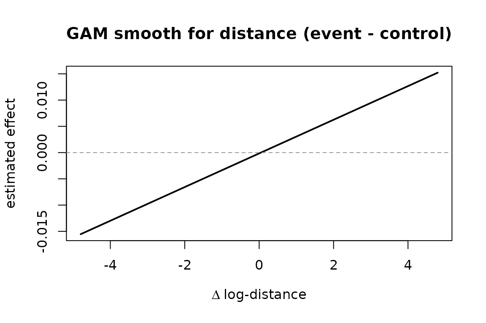

Species invasions as a relational event process
Source:vignettes/species-invasion.Rmd
species-invasion.RmdWhy model invasions as relational events?
A non-native species establishing in a new country is a one-shot
directed event: source country s “invades” target country
r at some time t. Once s has
reached r, the dyad (s, r) is removed from the
at-risk set — it cannot fire again. This is a textbook
relational event process with a one-shot
risk = "remove" rule.
We sketch a minimal end-to-end workflow in amore:
- Build a synthetic invasion log with known drivers (distance and propagule pressure).
- Use the
risk = "remove"simulator with case-control sampling. - Recover the drivers from the case-control output with a smooth GAM.
A synthetic invasion process
We use the 56 × 56 US-state distance matrix shipped with
amore as a stand-in for inter-country distances and treat
the states as the country universe.
data("dist_matrix", package = "amore")
states <- rownames(dist_matrix)
n_states <- length(states)
# Convert metres → log-units, scaled to a usable range.
dist_log <- log(dist_matrix / 1e5 + 1)The true intensity for an invasion from s to
r is
where
is the at-risk indicator (1 until s invades r,
0 thereafter),
is the (log) distance,
is the smooth shape
,
and
is an endogenous “neighbour pressure” term that grows whenever a country
related to s has recently invaded r.
For this short example we use just the distance term and a
half-life-decayed reciprocity proxy as the endogenous neighbour
pressure, then turn risk = "remove" on so each dyad fires
at most once.
true_dist_effect <- sin(-dist_log / 1.5)
cc <- simulate_relational_events(
n_events = 600,
senders = states,
receivers = states,
contribution_logits = true_dist_effect,
baseline_rate = 1,
allow_loops = FALSE,
n_controls = 1,
endogenous_stats = "reciprocity_exp_decay",
endogenous_effects = c(reciprocity_exp_decay = 0.4),
half_life = 2,
risk = "remove"
)
nrow(cc)
#> [1] 1200
head(cc)
#> stratum event sender receiver time
#> 1 1 1 Kentucky Michigan 0.0002410257
#> 2 1 0 Maryland South Dakota 0.0002410257
#> 3 2 1 California South Carolina 0.0007482291
#> 4 2 0 Ohio District of Columbia 0.0007482291
#> 5 3 1 Montana Rhode Island 0.0012749978
#> 6 3 0 American Samoa Guam 0.0012749978
#> reciprocity_exp_decay
#> 1 0
#> 2 0
#> 3 0
#> 4 0
#> 5 0
#> 6 0risk = "remove" guarantees the realized dyads are all
distinct:
events_only <- cc[cc$event == 1L, ]
nrow(events_only)
#> [1] 600
any(duplicated(paste(events_only$sender, events_only$receiver)))
#> [1] FALSERecovering the drivers
Attach the log-distance for every (sender, receiver) pair in the case-control table, then fit a conditional logistic model via GAM on the within-stratum differences.
get_dist <- function(s, r) {
dist_log[cbind(match(s, states), match(r, states))]
}
cc$dist_val <- mapply(get_dist, cc$sender, cc$receiver)
cases <- cc[cc$event == 1L, ]
controls <- cc[cc$event == 0L, ]
cases <- cases[order(cases$stratum), ]
controls <- controls[order(controls$stratum), ]
fit_df <- data.frame(
y = 1,
delta_dist = cases$dist_val - controls$dist_val,
delta_r = cases$reciprocity_exp_decay - controls$reciprocity_exp_decay
)
if (requireNamespace("mgcv", quietly = TRUE)) {
library(mgcv)
fit <- gam(y ~ s(delta_dist) + delta_r - 1, family = binomial, data = fit_df)
summary(fit)
x_grid <- seq(min(fit_df$delta_dist), max(fit_df$delta_dist), length.out = 200)
pred <- predict(fit,
newdata = data.frame(delta_dist = x_grid, delta_r = 0),
type = "link")
plot(x_grid, pred, type = "l", lwd = 2,
xlab = expression(Delta ~ "log-distance"),
ylab = "estimated effect",
main = "GAM smooth for distance (event - control)")
abline(h = 0, lty = 2, col = "grey60")
}
#> Loading required package: nlme
#> This is mgcv 1.9-4. For overview type '?mgcv'.
The smooth recovers the underlying
pattern, and the linear coefficient on delta_r should be
close to the true 0.4 used in the simulation.
Where to go from here
- Real data: replace
dist_matrixwith a country-by-country distance table and the simulated event log with a curated invasion record. - Additional covariates: trade flows or climatic similarity enter via
contribution_logitsor sender/receiver covariates. - Time-varying global covariates (policy regimes, seasonality) attach
through
global_covariates/global_effects. - For large state spaces or high invasion rates, switch to the
approximate
method = "tau_leap"simulator with a smalltauto cut wall-clock cost; therisk = "remove"rule is honoured under both algorithms.